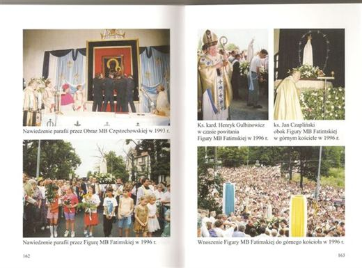
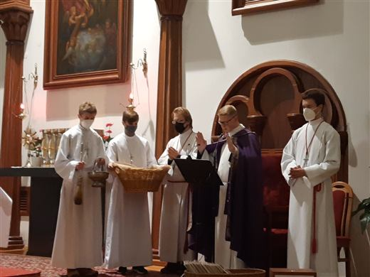
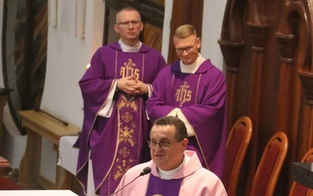
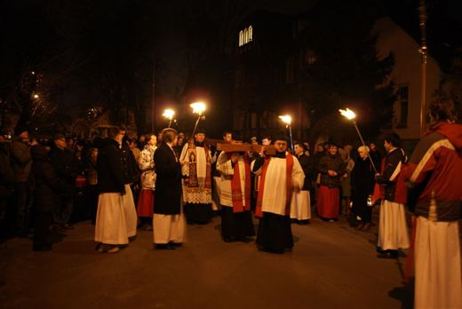
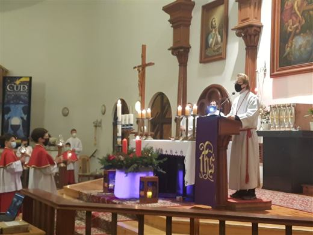
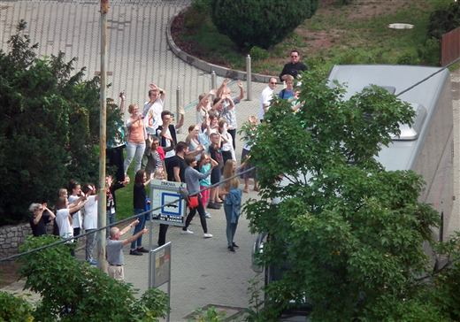

Niedziele i święta nakazane Dziś
Niedziele i święta
Wczytywanie…
Wczytywanie…
Wczytywanie…
Dziś w liturgii: Święci i wspomnienia dnia → (brewiarz.pl, otwiera się w nowej karcie)
Czytania mszalne i rozważanie na dziś (tygodnik katolicki „Niedziela”, otwiera się w nowej karcie)
W okresie wakacyjnym i w czasie świąt porządek Mszy może się zmieniać – zmiany podajemy w ogłoszeniach parafialnych.
Wczytywanie ogłoszeń…
Wiadomości z całej Archidiecezji Wrocławskiej – portal „2 Wieże” → (otwiera się w nowej karcie)
Wczytywanie…
Wczytywanie…
ul. Krzycka 42-44
53-020 Wrocław (Krzyki)
W kościele jest winda dla osób z niepełnosprawnościami.
Wyznacz trasę dojazdu
Od erygowania w 1960 r. do konsekracji kościoła w 1997 r.

Chrzest, I Komunia, bierzmowanie, małżeństwo, spowiedź – terminy i dokumenty.

Ks. Proboszcz i księża wikariusze.

Caritas, Żywy Różaniec, schole, młodzież, Wspólnota Rodzin św. Rity i inne.

Zdjęcia z życia parafii i jej historii.

Uroczystości, pielgrzymki, spotkania wspólnot i inicjatywy parafii.
Nowy w parafii? Sprawdź, czy Twoja ulica należy do parafii, i poznaj najważniejsze informacje na start.
Przewodnik dla nowych parafian →